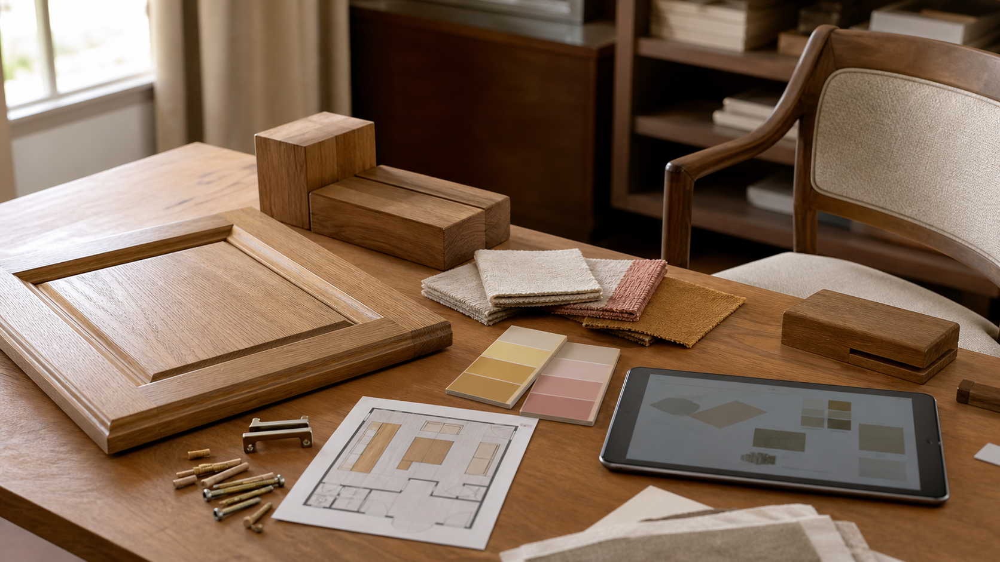

2026.07.15 가구·인테리어·목공 일일 트렌드

오늘의 흐름은 "새것처럼 보이기보다 오래 산 집처럼 설득하는 가구"입니다. 허니 오크와 90년대식 포근함이 다시 언급되고, 차가운 그린 대신 오커와 버터 옐로가 목재와 결합하며, 과장된 곡선은 더 단정한 선으로 정리되는 분위기입니다. 한편 할인형 홈 리테일은 매장을 넓히고, 3D 생성 AI 연구는 공방의 제품 사진과 공간 제안 방식이 앞으로 더 입체적으로 바뀔 수 있음을 보여줍니다.
1. 90년대식 허니 오크와 포근한 가구가 다시 거론된다
Good Housekeeping은 1990년대 홈 트렌드의 회귀를 다루며 허니 오크 캐비닛, 넉넉한 소파, 세이지 그린과 더스티 로즈 같은 부드러운 색이 젊은 주거층의 향수와 "살아 있는 집"에 대한 욕구와 연결된다고 정리했습니다. 핵심은 90년대 요소를 그대로 복원하는 것이 아니라, 빈티지 질감과 현대적 비례를 섞어 시간의 층을 만드는 방식입니다.
왜 중요할까. 밝은 오크와 애쉬는 한동안 북유럽식 미니멀 이미지로만 소비됐지만, 이제는 허니톤 오일 마감, 둥근 몰딩, 패널 문짝처럼 더 따뜻한 세부가 다시 설득력을 얻을 수 있습니다. 목간은 "가벼운 오크"와 "익은 오크" 마감 샘플을 나눠 보여주면 같은 수종 안에서도 세대감과 분위기를 조절할 수 있습니다.
- Good Housekeeping, 90년대 홈 트렌드 회귀 · 2026.07.15
2. 차가운 세이지 대신 오커와 따뜻한 옐로가 목재 배경색으로 뜬다
Homes & Gardens는 2026년 여름 디자이너들이 세이지, 피스타치오, 민트 같은 옅은 그린보다 소프트 오커, 골든 크림, 따뜻한 버터 옐로를 더 적극적으로 쓰고 있다고 보도했습니다. 기사에서 인용된 디자이너들은 이런 노란 계열이 목재, 대리석, 브론즈, 앤티크 브라스와 잘 맞고, 공간을 더 따뜻하고 낙관적으로 보이게 한다고 설명합니다.
왜 중요할까. 원목 가구 사진은 흰 배경만 쓰면 실제 생활감이 약해질 수 있습니다. 오크는 오커와 브론즈, 월넛은 머스터드와 차콜, 애쉬는 크림 옐로와 올리브를 함께 찍어 수종별 색 조합을 제안하면 고객이 "우리 집에 들어왔을 때"를 더 쉽게 상상합니다.
- Homes & Gardens, 따뜻한 옐로 컬러 트렌드 · 2026.07.12
3. 과장된 곡선은 줄고, 테일러드 라인과 의미 있는 색이 부상한다
Better Homes & Gardens는 7월 14일 기사에서 모던 팜하우스 과잉, 안전한 무채색, 과도한 스캘럽과 곡선이 피로감을 주고 있다고 정리했습니다. 대안으로는 따뜻한 목재, 빈티지 터치, 믹스 메탈, 자신 있는 컬러, 그리고 곡선을 작은 포인트로만 쓰는 더 전통적이고 단정한 형태가 제시됐습니다.
왜 중요할까. 곡선 모서리와 라운드 상판은 여전히 유효하지만, 모든 요소를 둥글게 만들면 유행품처럼 보일 수 있습니다. 목간은 테이블 다리, 손잡이, 문짝 프레임 중 한두 곳에만 부드러운 라운딩을 주고 나머지는 정제된 직선으로 잡는 식으로 오래가는 비례를 설계할 필요가 있습니다.
- Better Homes & Gardens, 과해진 홈 데코 스타일과 대안 · 2026.07.14
4. 오프프라이스 홈 리테일은 폐점 공간을 흡수하며 확장한다
The Sun은 TJX 계열 HomeGoods가 7월 16일 텍사스 셀마, 7월 30일 캘리포니아 프레즈노에 새 매장을 열 예정이라고 보도했습니다. 같은 보도는 HomeGoods가 가구, 러그, 쿠션, 홈 액세서리를 "가치 가격"으로 제안한다고 설명하면서도, 일부 소비자는 가격 상승과 장식품 구성 부족을 불만으로 언급했다고 전했습니다.
왜 중요할까. 저가 홈 리테일의 확장은 공방 제품을 더 비싸 보이게 만들지만, 동시에 대량 매장에서 해결하기 어려운 치수, 수종, 수리, 설치, 장기 관리의 가치를 선명하게 드러낼 기회입니다. 견적서에는 "매장 완제품과 다른 점"을 감성 문구가 아니라 맞춤 치수, 벽체 고정, 하드웨어 등급, 리피니시 가능성으로 써야 합니다.
- The Sun, HomeGoods 신규 매장 보도 · 2026.07.12, 2026.07.13 업데이트
5. 3D 생성 AI는 가구 제안 이미지를 더 빠르게 입체화한다
arXiv에 6월 26일 제출된 Home3D 1.0 연구는 단일 참고 이미지에서 인테리어와 이커머스용 3D 자산을 생성하는 시스템을 제안합니다. 연구는 가구나 장식품 사진을 바탕으로 메시, 물리 기반 렌더링 재질, 편집 가능한 부품 구조를 생성해 공간 기획과 온라인 상품 표현에 활용할 수 있다고 설명합니다.
왜 중요할까. 공방의 맞춤가구 상담은 아직 실물 샘플과 2D 도면이 중심이지만, 고객은 점점 더 빠른 공간 미리보기를 기대합니다. 목간은 당장 AI 3D 모델을 쓰지 않더라도 정면, 측면, 디테일, 배치 사진을 규칙적으로 축적해두면 향후 3D 제안서나 온라인 구성 도구로 확장하기 쉽습니다.
- arXiv, Home3D 1.0 논문 페이지 · 2026.06.26 제출
오늘의 실무 인사이트
- 오크 마감은 밝기보다 시간감을 기준으로 나눈다. 같은 오크라도 생지 느낌, 허니 오일, 훈증풍 브라운처럼 단계별 샘플을 만들고, 90년대식 따뜻함을 현대적 비례로 조정한 예시를 함께 보여주면 고객의 선택지가 선명해집니다.
- 제품 사진에는 벽색과 직물 샘플을 같이 둔다. 오커, 크림 옐로, 더스티 로즈, 올리브, 차콜을 수종별로 매칭한 작은 팔레트를 만들어두면 원목 가구가 공간 안에서 어떻게 보일지 상담 시간이 짧아집니다.
- 곡선은 기능 부위에 집중한다. 손이 닿는 앞모서리, 팔이 스치는 손잡이, 의자 등받이처럼 촉감이 중요한 곳에 라운딩을 쓰고, 전체 실루엣은 단정하게 유지하면 유행이 지나도 오래 보입니다.
- 제품 사진을 3D 제안의 원천 데이터처럼 찍는다. 정면, 측면, 상부, 디테일, 공간 배치 사진을 같은 조명과 배경에서 축적하면 향후 온라인 견적, 3D 목업, 공모전 시각 자료로 재활용하기 쉽습니다.